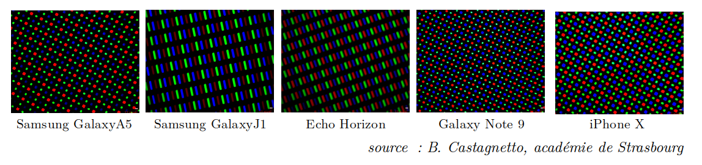
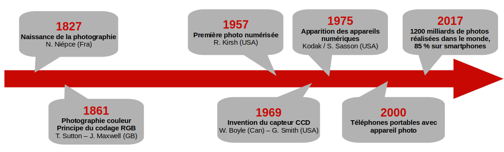
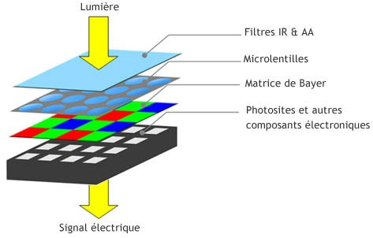
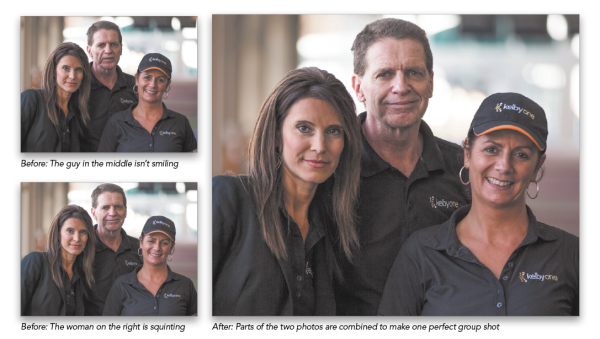
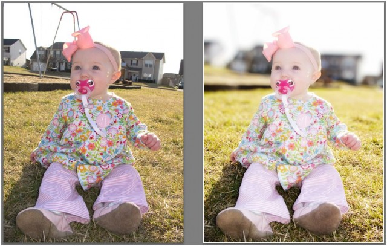
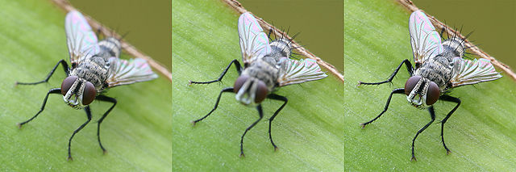
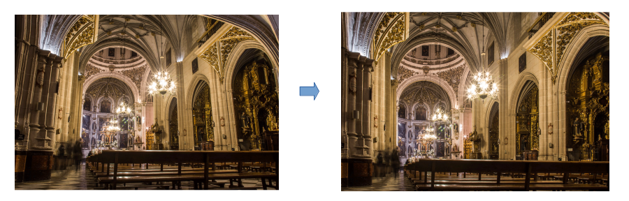

L'image numérique⚓︎
1. Vidéo introductive⚓︎
2. Le pixel⚓︎
2.1 Une image est composée de pixels⚓︎
Le pixel (contraction de «Picture Element») est l'élément de base d'une image numérique.
Une image numérique se présente sous la forme d’un quadrillage - ou d'un tableau - dont chaque case est un pixel d’une couleur donnée. On peut donc repérer chaque pixel par sa ligne et sa colonne dans ce quadrillage, à l'aide de coordonnées en partant du coin en haut à gauche

2.2 Comment un écran affiche-t-il des pixels ?⚓︎
L'observation à la loupe de différents écrans de téléphone donne ceci : 
Pour afficher une image sur un écran de téléphone, seules trois couleurs sont donc disponibles : le rouge, le vert et le bleu. Comment ces 3 couleurs peuvent-elles générer toutes les autres couleurs ?
3. Le codage RGB⚓︎
Le codage RGB
Chaque pixel correspond à un triplet de trois nombres entiers, soit les valeurs de rouge (Red), de vert (Green) et de bleu (Blue) afin de reconstituer la couleur. Chaque valeur est codée entre 0 et 255. On parle de code RGB (RVB in français).

Plus de renseignements sur la méthode additive peuvent être retrouvés ici.
À noter qu'une couleur dont les 3 composantes sont identiques correspond à un niveau de gris.
Ce site (parmi beaucoup d'autres !) permet de retrouver le codage RGB d'une couleur. Il permet aussi de trouver le codage html d'une couleur, qui est basé sur le système hexadécimal.
Activité sur Capytale : modification en Python des couleurs d'une image
- Connectez-vous à LycéeConnecté.
- Cliquez sur ce lien.
Exercice 1
les préfixes
- Ko : kilo -> \(10^3\)
- Mo : méga -> \(10^6\)
- Go : giga -> \(10^9\)
- To : téra -> \(10^{12}\)
- Po : péta -> \(10^{15}\)
- Eo : exa -> \(10^{18}\)
Si je possède une image de 600 pixels sur 400 pixels, quel est le poids (en octets, puis en Ko, puis en Mo) de cette image ?
On considèrera que le fichier ne contient que les informations relatives à chaque pixel, et qu'aucun algorithme de compression n'a été utilisé.
Correction
Nombre de pixels :
\(600 \times 400 = 240000\).
Chaque pixel nécessite 3 octets, donc le poids total de l'image est \(240000 \times 3 = 720000\) octets, soit 720 Ko, ou encore 0,72 Mo.
Exercice 2
Un ami m'envoie une photo de ses vacances. Le fichier de son image (en admettant qu'il ne contienne que le codage des pixels et rien d'autre, ce qui est faux...) commence par ceci :
000011000001000111100110000011010001000111100100000010100000111111101000...
Est-ce que mon ami a beau temps pour ses vacances ?
Aide : pour vous éviter des calculs, vous pouvez utiliser le convertisseur binaire-décimal disponible à cette adresse.
Correction
Les 3 premiers octets de cette série de bits nous donneront les valeurs R, G, B du premier pixel en haut à gauche de l'image.
Prenons donc les 24 premiers bits : 000011000001000111100110.
Ils se décomposent en 3 octets : 00001100 , 00010001 et 11100110.
Ils correspondent respectivement aux valeurs décimales 12, 17 et 230.
La couleur du premier pixel en haut à gauche est donc (12,17,230). Cette couleur est un bleu. On peut donc supposer que mon ami a beau temps pour ses vacances.
Conclusion 
- Les écrans (téléphones, ordinateurs, télévisions) sont constitués de pixels eux-mêmes constitués de sous-pixels rouge, vert ou bleus, posés sur une dalle noire.
- En allumant ces sous-pixels avec différentes intensités, on peut générer toutes les couleurs.
- Pour pouvoir donner ces instructions d'allumage à différentes intensités, le processeur qui gère ces pixels reçoit pour chacun d'entre eux trois nombres, pour chacun des sous-pixels.
- Ces nombres sont écrits en binaire et sont codés sur un octet : ces nombres sont donc compris entre 0 et 255.
(0,0,0)est le code RGB du noir,(255,255,255)est le code RGB du blanc. Il y a plus de 16 millions de combinaisons possibles (\(256^3=16777216\)). Vous pouvez les tester ici.
Nous allons maintenant essayer de répondre à la question suivante : comment la lumière extérieure est transformée en une multitude d'informations de rouge, de vert et de bleu ?
4. De la lumière aux pixels : le fonctionnement de l'appareil photo numérique⚓︎
4.1 Un peu d'histoire⚓︎

L'ancêtre de la photographie numérique, appelé photographie argentique, fonctionnait grâce à des réactions chimiques successives, permettant de fixer sur du papier la lumière capturée par l’objectif de l’appareil photo.
La photographie numérique consiste à convertir en signaux numériques cette lumière capturée par l’objectif.
4.2 Le capteur de l'appareil photo numérique⚓︎
Comme évoqué précédememnt, le principe physique de fonctionnement d’un écran impose qu’il reçoive une information décomposée en niveaux de rouge, de vert et de bleu. Le procédé technique fondamental de la photographie numérique est donc la décomposition de la lumière visible suivant ces trois composantes : c’est le rôle de la matrice de Bayer.

Pour résumer, la matrice de Bayer va convertir la lumière visible en courant électrique (plus ou moins fort) selon la quantité de lumière verte, rouge ou bleue qui aura été reçue dans les photosites:
Les photosites jouent un rôle dans la captation de la lumière, à l’intérieur du capteur de l’appareil photo numérique, alors que les pixels de l’écran servent à reproduire cette lumière. Lorsque les fabricants d’appareil photo ou de smartphones communiquent sur le nombre de mégapixels, ils font référence à la définition maximale (en nombre de pixels ) que pourra avoir l’image une fois affichée. Ce nombre de mégapixels n’est pas égal au nombre de photosites. En effet, des procédés algorithmiques permettent maintenant de deviner de nouveaux pixels (on parle d’interpolation) non captés par les photosites.
5. Exemples d'algorithmes de traitement d'image : peut-on encore croire une photo ?⚓︎
La qualité des photographies prises par les appareils photo numériques ou les smartphones augmente d’année en année.
Il devient de plus en plus facile de réaliser une photographie qui satisfait nos attentes. Si des progrès ont eu lieu dans le domaine de l’optique, c’est essentiellement aux progrès fulgurants des algorithmes de traitement d’images que l’on doit la satisfaction d’une photographie réussie.
Les algorithmes présentés ci-dessous peuvent être utilisés en post-traitement de photographie (sur un ordinateur avec un logiciel dédié), par le biais d’un filtre appliqué sur un réseau social, ou même de manière automatique lors de la prise de vue, lorsque ces algorithmes sont implémentés dans l’appareil photo numérique.
5.1 Algorithme n°1 : Fusion automatique⚓︎
Cet algorithme fusionne plusieurs photographies pour ne garder que des visages souriants.

5.2 Algorithme n°2 : Effet Bokeh⚓︎
L'effet Bokeh rajoute une modification artificielle de la profondeur de champ. Appelé « mode Portrait » sur iOS 
5.3 Algorithme n°3 : Focus stacking⚓︎
Focus stacking : plusieurs photos de profondeurs de champs différentes sont fusionnées pour que le premier plan et l’arrière-plan soient nets en même temps.

5.4 Algorithme n°4 : Correction de la distorsion⚓︎
Cet algorithme compense les déformations optiques dues aux lentilles de l'objectif de l'appareil, et redresse artificiellement les photos.

5.5 Exercice⚓︎
Exercice
Classez ces algorithmes dans le tableau suivant.
| A. Algorithmes essayant de reproduire le plus fidèlement possible une réalité | B. Algorithmes essayant d’imiter un effet artistique de la photo argentique | C. Algorithmes produisant une photo d’une situation qui n’a jamais existé |
|---|---|---|
Correction
| A. Algorithmes essayant de reproduire le plus fidèlement possible une réalité | B. Algorithmes essayant d’imiter un effet artistique de la photo argentique | C. Algorithmes produisant une photo d’une situation qui n’a jamais existé |
|---|---|---|
| 3 | 2 | 1 |
| 4 | ||
Conclusion
- Pour stocker numériquement les informations nécessaires à l'affichage d'une photographie, il faut pour chaque pixel de l'image 3 informations sur la quantité de Rouge, de Vert et de Bleu.
- Dans un capteur d'appareil photo numérique a lieu une transformation de la lumière en énergie électrique.
- La lumière est concentrée par des lentilles, puis décomposée en passant dans des filtres rouge, vert et bleu.
- La lumière vient alors frapper des photosites (sorte de minuscules panneaux photovoltaïques) qui vont donc produire une quantité d'électricité proportionnelle à la quantité de lumière reçue.
- Ce courant électrique est ensuite converti en un nombre binaire sur 1 octet (donc entre 0 et 255), puis stocké dans un fichier.
- Avant restitution de l'image numérique à l'écran, de multiples algorithmes de correction et d'amélioration de la photographie ont lieu.
- Ces algorithmes, toujours plus évolués à mesure que la puissance des processeurs augmente, permettent de compenser les faiblesses du matériel optique (objectifs minuscules...), mais aussi les faiblesses du photographe (tremblements...)
- On peut aussi appliquer ensuite à l'image d'autres transformations (filtres, modification des pixels), qui amènent naturellement à se poser des questions sur la confiance qu'on peut avoir dans une photographie (en matière judiciaire notamment).